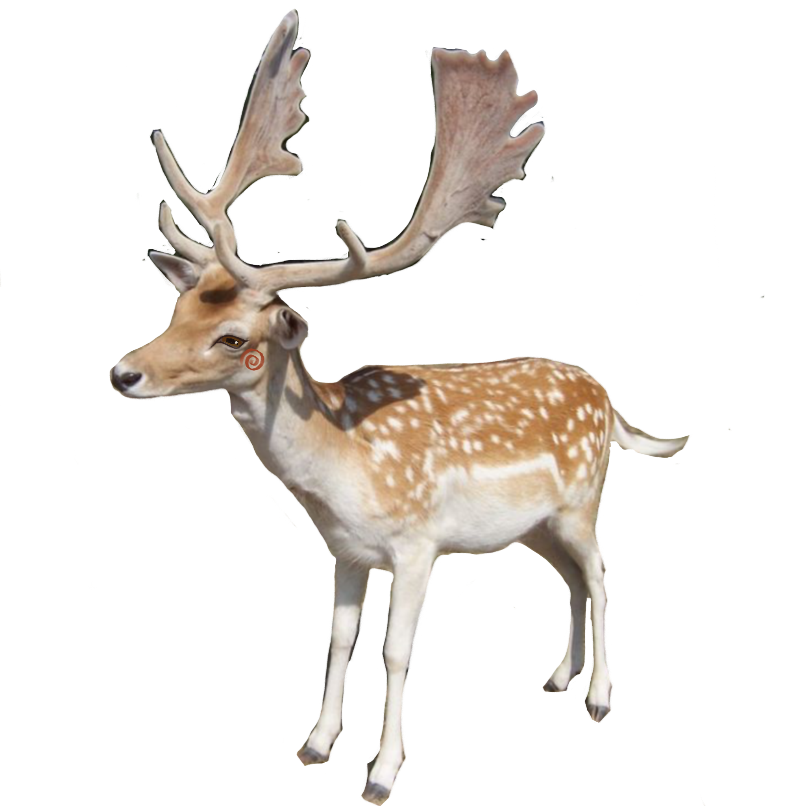

Robotics and art aren't typically taught together in most schools. They are considered too different yet in today's society computers are everywhere so why would you leave art behind while the world keeps moving forward?
Computers are tools, yet many people don't think of them as tools that could be capable of making art but now we are in the digital age where every space has at least one screen where we can interact. As upcoming teachers, we cannot set our students for failure by teaching them outdated curriculums for jobs that don't exist anymore.
Before I can become a teacher, I need to be a learner and a learner I was. (a very stubborn learner).
All inquiries of this course made me feel as if I've been thrown into a river without previous knowledge of how to swim. Scratch was a distant but pleasant memory from my early childhood, but once again I had to confront the past by remembering. It had been a long time since I felt overwhelmed by an art class, probably because I had never thought art could be made with code. With the little knowledge I had, I decided to first look at other projects on the platform. I observed how my peers would make their little sprite move and slowly began creating my own code. As hesitation left my body, I slowly began playing by moving the blocks around, curious what would happen. The more I played the more I learned how to code and something that felt overwhelming at first became fun and engaging. I decided to make a simple game where you can feed a deer, either an apple or Cheetos. I had to figure out the coordinates of the sprites so it would look as if the deer was actually eating. Scratch uses y and x coordinates, the same ones I used to dread while I was in high school learning algebra. I realized the importance of creating a lesson that would encourage students to ask questions rather than to follow a guide. It's something so fundamental about living beings, we learn through play! How can we expect students to learn if we just give them a simple note package with all the steps. This doesn't encourage learning; it only makes students memorize steps without developing skills for the future. I cared about coordinates because I cared about my silly project.
Learning in the digital age opens many doors for students to explore and to connect their interests with their learning at school.
As a teacher you will encounter lessons you don't find particularly interesting or engaging. Honestly I thought I was free from robotics going into the art world but then I saw the motors, alligators and other materials laid out on the table. I was forced to confront one of the subjects I disliked the most. Robotics...
After a rough spring break, I had enough and decided to make a machine that would convey how I was feeling that week. I drew inspiration from a TikTok user that made absurd art videos with one of my favorite platforms, Roblox. I began with a simple sketch before moving to construction. I built the torso before gluing the motor before I realized it was too fast for what I had in mind. With every minor adjustment I made something else would stop working suddenly. I was reminded of how much robotics infuriated me, but as much as I wanted to give up I simply couldn't. I cannot afford to give up, just like a classroom when you are a teacher, it's your responsibility to find solutions and ways to teach students with lifelong skills.
Finally, after trial and error I managed to complete my art machine. It was not perfect, but it captured the feeling I wanted it to convey, the feeling of helplessness, where only one limb is working yet, you keep moving forward, even if the rest of your body flays uselessly you simply keep going.
As upcoming teachers, we carry a great responsibility to care for and help future generations grow and succeed in a constantly changing world.
I used Claude to help me with coding and refine my writting